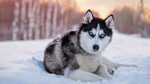

Husky
Husky is a general term for a type of dog used in the polar regions, primarily and specifically for work as sled dogs. It refers to a traditional northern type, notable for its cold-weather tolerance and overall hardiness.[1][2] Modern racing huskies that maintain arctic breed traits (also known as Alaskan huskies) represent an ever-changing crossbreed of the fastest dogs.[3][4] Huskies have continued to be used in sled-dog racing, as well as expedition and trek style tour businesses, and as a means of essential transportation in rural communities.[5] Huskies are also kept as pets, and groups work to find new pet homes for retired racing and adventure-trekking dogs.[6]
learn more